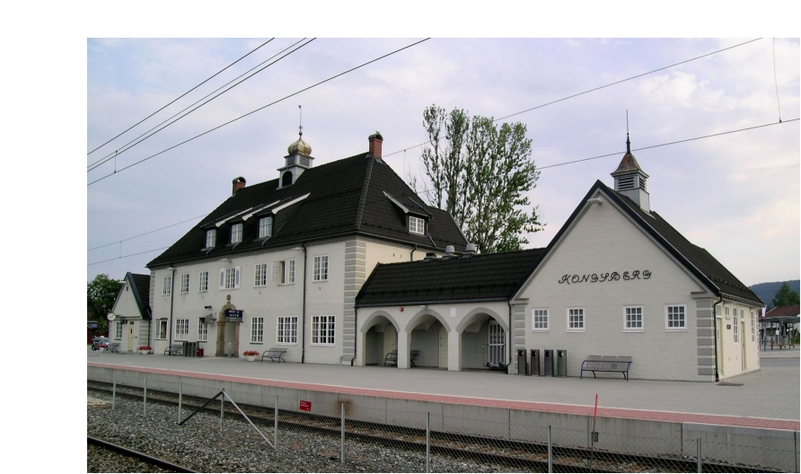

Public transport in kongsberg
Public transport in kongsberg is not hard to come by. There are bus routes all around the town and it is easy to get from point a to point b with these routes. But perhaps the biggest attraction in kongsberg is the train station which you can reach anywhere from Bergen or Trondheim to Oslo and Kristiansand
